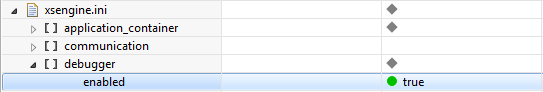

Getting Immediate Feedback
You can use an immediate feedback session to get a better understanding of how your XSJS function works and performs.
Prerequisites
- Start the SAP HANA studio and open the Administration perspective.
- On the Configuration tab, add a section called
 xsengine.ini
xsengine.ini  debugger
debugger  (if it does not exist) and add (or set) the following
parameter: enabled=true
(if it does not exist) and add (or set) the following
parameter: enabled=true
Context
-
Function Evaluation
The time slider indicates which steps of the function have been executed. The variable list shown just below the time slider displays the values of the variables in each step.
-
Called Function List
If other functions are called by the selected function, they are listed here.
-
Database Performance
Shows the time that was required to execute any SQL queries contained in the function.
-
Query Results
Provides a preview of the data returned by the function, that is, the first few records, so that you can see what a typical result set looks like.
Procedure
-
Choose an option.
To... Do the following... Step through the execution In the Function Evaluation panel, use the time slider to move step execution forward or backward. The variable list shows the values of the variables as evaluated in each step. Each variable newly assigned in a step is marked with an asterisk (*).
Whichever execution step is selected on the slider, the corresponding position is highlighted in the source code.
Modify the statement with which the function is called - In the Function Evaluation panel, choose
 (Edit).
(Edit). - In the Explore Function dialog box, enter a call statement that
will be used to invoke the function to be evaluated:
-
Select a call statement from the dropdown box.
-
Edit a JavaScript call statement.
-
-
Choose Evaluate to re-start the evaluation.
The function is called by the new statement and the Immediate Feedback panel updated accordingly.
Step into called functions - In the Called Function List pane, select the checkboxes of the functions that you want to step into and evaluate in the next immediate feedback run.
-
Start immediate feedback again by choosing
(Edit)
and then Evaluate. -
Use the time slider to inspect the newly included steps.
- In the Function Evaluation panel, choose